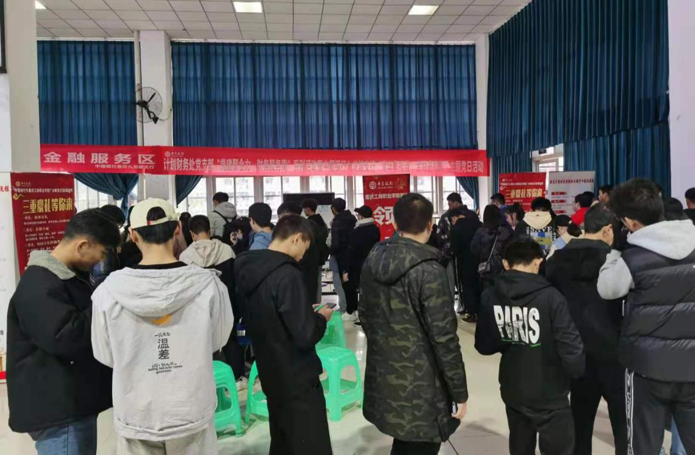
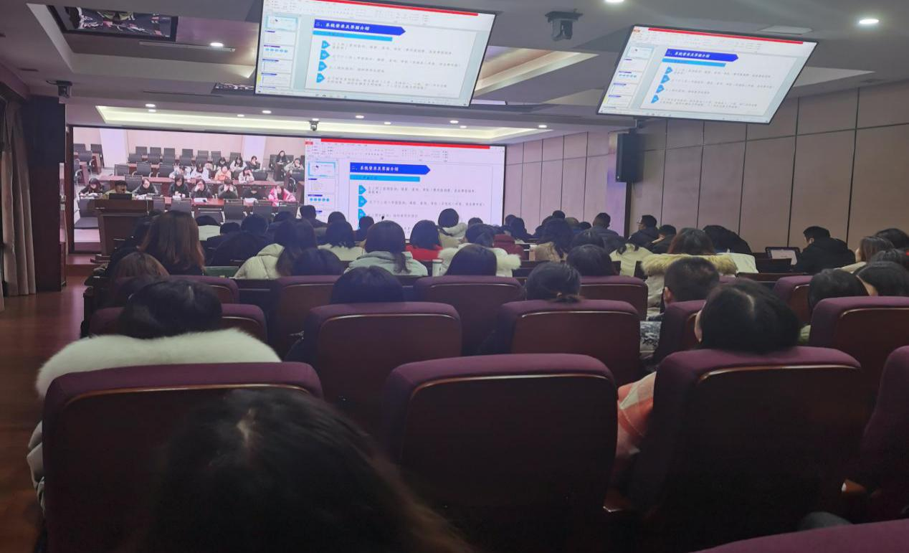

【供稿/计划财务处】如何结合工作职能职责，探索有针对性有实效性的“服务育人”新模式，在关心人、帮助人、服务人中教育人、引导人？近期，计划财务处在前期调研了解师生工作学习中的困难和诉求基础上，联合中国银行九龙坡支行，面向全校师生开展“党建聚合力，青年勇担当”财务服务周主题党日活动。

一是帮助学生现场开立结算账户。在学工部和各二级学院支持下，计划财务处通过现场服务，帮助同学们完善了各类费用清算账户信息，有效解决了因学生银行卡信息不全造成的费用结清不及时问题。

二是开展智慧财务网报系统业务培训。本次培训联合人事处共同举办，计划财务处财务科科长叶红就如何通过PC端和手机端进行各类经济业务的报销和审批，在培训中为教职工们作了现场演示，并报销方面的问题进行了答疑，有助于教职工规范掌握网报业务，实现报销业务少跑路。
三是开展金融产品知识普及公务卡、ETC现场办理活动。活动联合中国银行九龙坡支行共同展开，旨在进一步加深教职工对金融知识的认识与了解，提升教职工金融安全意识和风险识别能力。同时，现场开设公务卡办理窗口，为进一步加强公务卡结算管理提供基础保障。
在开立结算账户的现场，管理学院2018级廖宇同学完善了自己的银行卡信息。廖宇表示，财务处的老师们走到同学们身边，有效解决了曾经困惑自己的费用结清不及时问题。更重要的是，让他学习到了“面对面”解决困难和问题的方法。他要把这个活动“安利”给班上的同学们，更要把解决问题的方法带到以后的学习和工作中。